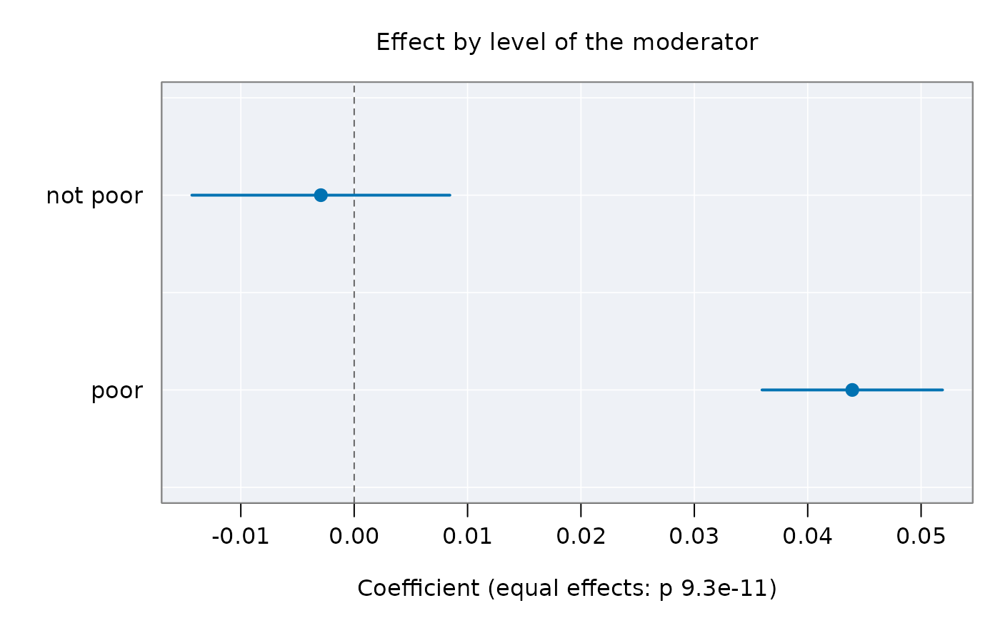

Estimates the effect of an exposure separately for each level of a moderator (household wealth, income quantile, rural or urban, offence context) and tests whether the effects are equal.
Arguments
- data
A data frame.
- var
The name of the exposure (a regressor
xor endogenousendoof the estimator).- mod
The name of the moderator column (labels).
- est
- how
"inter"or"split".- ...
The other arguments of
est. Forplot(), passed to the base-graphics call.- x
An object of class
hetfx.- main
NULL(a default title) or one string.- col
NULL(the palette) or colours.- pal
NULL(the session palette, seeplotopt()) or a palette name forblpal().
Value
A list of class hetfx: tab, one row per level (level,
est, se, lo, hi, p, n); test, the Wald test of equality
(stat, df, p); how.
Details
The choices and their sources: how = "split" fits the estimator on
each level's rows alone, as Kishore, Tsaneva and Balakrishnan (2026,
section 4.7 and table 5: poor and non-poor households, rural and urban)
and Bondy, Roth and Sager (2020, figure 5: house-price quantiles) do;
every coefficient and fixed effect then differs by level. The test of
equality treats the levels' estimates as independent, which holds when
no cluster spans two levels. how = "inter" (the default) fits one
model with the exposure interacted with each level's indicator (and, for
an instrumental-variable estimator, each instrument too), the other
coefficients and the fixed effects common; Bondy, Roth and Sager report
that this "joint regression including quantile interactions" gives
similar estimates (footnote 29). Its test uses the fit's covariance, so
it allows for clusters spanning levels. Neither paper reports a test of
equality; it is the Wald test of b_1 = b_2 = ... = b_K on K - 1
degrees of freedom.
plot() draws the effect of each level with its interval, the
p-value of the test of equal effects in the axis title, and returns
the rows drawn.
References
Kishore, S., Tsaneva, M. and Balakrishnan, U. (2026). Air pollution and intimate partner violence in India. Review of Economics of the Household. doi:10.1007/s11150-026-09851-3
Bondy, M., Roth, S. and Sager, L. (2020). Crime is in the air: the contemporaneous relationship between air pollution and crime. Journal of the Association of Environmental and Resource Economists, 7(3), 555-585. doi:10.1086/707127
Examples
# simulated: pollution matters in poor areas only
set.seed(8)
d <- expand.grid(day = 1:60, area = 1:20)
d$poor <- ifelse(d$area <= 10, "poor", "not poor")
d$pm <- rnorm(nrow(d), 20, 5)
d$crimes <- rpois(nrow(d), exp(0.5 + 0.04 * d$pm * (d$poor == "poor")))
h <- hetfx(d, "pm", "poor", y = "crimes", x = "pm", fe = c("area", "day"))
h
#> hetfx: the effect by level (interactions)
#> level est se lo hi p n
#> not poor -0.002938 0.005806 -0.01432 0.008441 6.128e-01 600
#> poor 0.043931 0.004062 0.03597 0.051892 2.910e-27 600
#> Wald test of equal effects: 41.96 on 1 df, p = 9.31e-11
plot(h)
